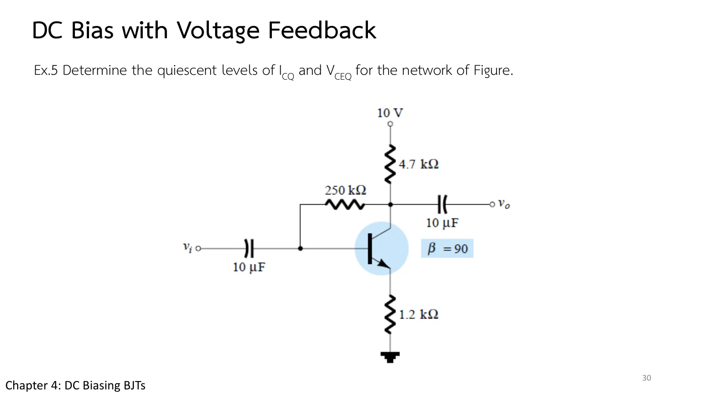
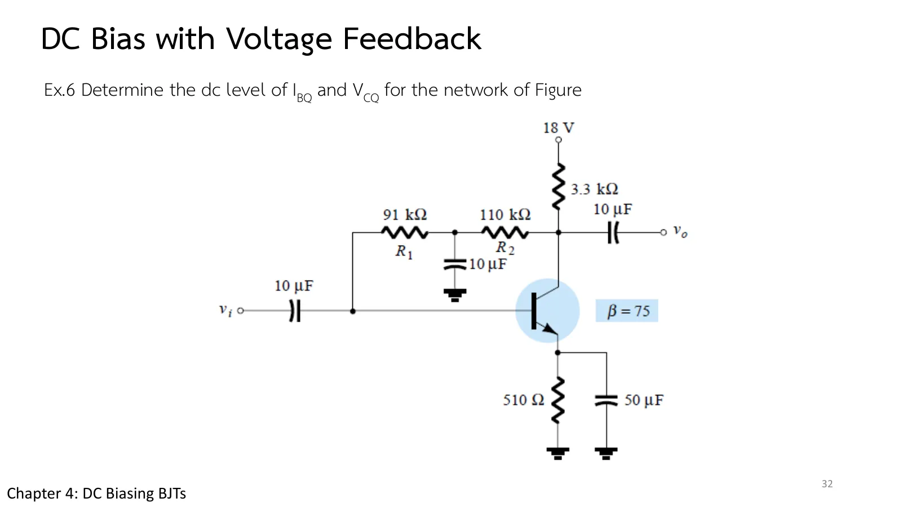

วงจรไบแอสแบบป้อนกลับจากคอลเล็กเตอร์ Collector-feedback bias
Collector-feedback bias \(R_C\) and \(R_E\) reflected into the base loop by β
สไลด์บทที่ 4 หน้า 26–32 ต่อตัวต้านทาน \(R_F\) จากคอลเล็กเตอร์มาที่เบสแทนที่จะต่อจาก \(V_{CC}\): ถ้า \(I_C\) เพิ่ม แรงดันคอลเล็กเตอร์ลด กระแสเบสที่ไหลผ่าน \(R_F\) ก็ลดตาม นี่คือการป้อนกลับ (feedback) ที่ทำให้จุด Q ไวต่อ β น้อยกว่าวงจรไบแอสคงที่และไบแอสอิมิตเตอร์ หน้านี้มีภาพจำลองที่ปรับ \(R_F\), \(R_C\), \(R_E\) และ β ได้ (ส่วน A) Ex.5 กับผลของ β ที่เพิ่ม 50 % Ex.6 ที่มีตัวต้านทานป้อนกลับสองตัว และแบบฝึกเพิ่ม
Chapter 4 slides pp. 26–32. Connect the resistor \(R_F\) from the collector to the base instead of from \(V_{CC}\): if \(I_C\) rises, the collector voltage falls and so does the base current through \(R_F\). This feedback makes Q less sensitive to β than fixed or emitter bias. This page has a circuit whose \(R_F\), \(R_C\), \(R_E\) and β you can change (section A), Ex.5 with a 50 % rise in β, Ex.6 with two feedback resistors, and more practice.
ประเด็นสำคัญของหน้านี้
- วงเบส–อิมิตเตอร์ (สไลด์หน้า 27–28): \(V_{CC} - I_C'R_C - I_BR_F - V_{BE} - I_ER_E = 0\) กระแสใน \(R_C\) คือ \(I_C' = I_C + I_B\) แต่ถือ \(I_C' \cong I_C = \beta I_B\) และ \(I_E \cong I_C\) ได้สมการ 4.41: ทั้ง \(R_C\) และ \(R_E\) สะท้อนเข้าวงเบสด้วย β
- รูปแบบทั่วไป: ทุกวงจรของบทนี้มี \(I_B = V'/(R_F + \beta R')\): ไบแอสคงที่ \(R' = 0\) ไบแอสอิมิตเตอร์ \(R' = R_E\) ป้อนกลับ \(R' = R_C + R_E\) ยิ่ง \(\beta R'\) ใหญ่กว่า \(R_F\) \(I_{CQ} \cong V'/R'\) ยิ่งไม่ขึ้นกับ β
- วงคอลเล็กเตอร์–อิมิตเตอร์ (สไลด์หน้า 29): \(V_{CE} = V_{CC} - I_C(R_C + R_E)\) เหมือนไบแอสอิมิตเตอร์และตัวแบ่งแรงดัน
- ความไวต่อ β: β เพิ่ม 50 % ทำให้ \(I_{CQ}\) เพิ่มเพียง 12 % (Example 4.13)
- ตัวเก็บประจุกลาง \(R_F\) (Ex.6): ลดการป้อนกลับของสัญญาณไฟสลับ แต่สำหรับไฟตรงเป็นเปิดวงจร \(R_B = R_{F1} + R_{F2}\)
- อิ่มตัวและเส้นโหลด (สไลด์หน้า 31): เหมือนสองวงจรก่อนหน้า \(I_{C\text{sat}} = V_{CC}/(R_C + R_E)\)
Key points of this page
- The base–emitter loop (slides pp. 27–28): \(V_{CC} - I_C'R_C - I_BR_F - V_{BE} - I_ER_E = 0\). The current in \(R_C\) is \(I_C' = I_C + I_B\), but with \(I_C' \cong I_C = \beta I_B\) and \(I_E \cong I_C\) we get Eq. 4.41: both \(R_C\) and \(R_E\) are reflected into the base loop by β.
- The general form: every circuit of this chapter has \(I_B = V'/(R_F + \beta R')\): fixed bias \(R' = 0\), emitter bias \(R' = R_E\), feedback \(R' = R_C + R_E\). The larger \(\beta R'\) is next to \(R_F\), the less \(I_{CQ} \cong V'/R'\) depends on β.
- The collector–emitter loop (slide p. 29): \(V_{CE} = V_{CC} - I_C(R_C + R_E)\), as for emitter and voltage-divider bias.
- Sensitivity to β: a 50 % rise in β raises \(I_{CQ}\) by only 12 % (Example 4.13).
- A capacitor in the middle of \(R_F\) (Ex.6): it reduces the ac feedback, but for dc it is open and \(R_B = R_{F1} + R_{F2}\).
- Saturation and the load line (slide p. 31): as for the two previous circuits, \(I_{C\text{sat}} = V_{CC}/(R_C + R_E)\).

การป้อนกลับจากคอลเล็กเตอร์
Feedback from the collector
เริ่มจากวงจรของ Ex.5 แผงค่าแสดงพจน์ทั้งสองของตัวส่วน \(R_F\) กับ \(\beta(R_C + R_E)\): ยิ่งพจน์หลังใหญ่กว่า กราฟล่าง (\(I_C\) เทียบกับ β) ยิ่งราบ ลองลด \(R_F\) ลงมาก ๆ แล้วดูว่าจุด Q เข้าใกล้ \((V_{CC} - V_{BE})/(R_C + R_E)\) ซึ่งไม่มี β เลย (ภาพจำลองแก้วงจรโดยไม่ประมาณ \(I_C' = I_C + I_B\))
Start from the circuit of Ex.5. The reading list shows the two terms of the denominator, \(R_F\) and \(\beta(R_C + R_E)\): the more the second dominates, the flatter the lower graph (\(I_C\) against β). Lower \(R_F\) a lot and watch Q approach \((V_{CC} - V_{BE})/(R_C + R_E)\), which has no β in it (the simulation solves the circuit without approximation, \(I_C' = I_C + I_B\)).
Ex.5: จุด Q และผลของ β ที่เพิ่ม 50 %
Ex.5: the Q-point, and a 50 % rise in β


\(V_{CC}\) = 10 V, \(R_F\) = 250 kΩ, \(R_C\) = 4.7 kΩ, \(R_E\) = 1.2 kΩ, β = 90 จงหา \(I_{CQ}\) และ \(V_{CEQ}\) แล้วทำซ้ำเมื่อ β = 135 (เพิ่ม 50 %)
\(V_{CC}\) = 10 V, \(R_F\) = 250 kΩ, \(R_C\) = 4.7 kΩ, \(R_E\) = 1.2 kΩ, β = 90. Determine \(I_{CQ}\) and \(V_{CEQ}\), then repeat with β = 135 (50 % more).
ภาพจำลองเปลี่ยนเป็นทรานซิสเตอร์ β = 135 ในขั้นที่ 3 โดยยังวาดจุด Q เดิมไว้ ลองตอบก่อน
The simulation switches to a β = 135 transistor at step 3, keeping the old Q drawn. Try it first.
Ex.6: ตัวต้านทานป้อนกลับสองตัว
Ex.6: two feedback resistors

\(V_{CC}\) = 18 V, \(R_C\) = 3.3 kΩ, \(R_{F1}\) = 91 kΩ, \(R_{F2}\) = 110 kΩ (มีตัวเก็บประจุ 10 µF จากจุดต่อลงกราวด์), \(R_E\) = 510 Ω, β = 75 จงหา \(I_{BQ}\) และ \(V_{CQ}\)
\(V_{CC}\) = 18 V, \(R_C\) = 3.3 kΩ, \(R_{F1}\) = 91 kΩ, \(R_{F2}\) = 110 kΩ (a 10 µF capacitor from their junction to ground), \(R_E\) = 510 Ω, β = 75. Determine \(I_{BQ}\) and \(V_{CQ}\).
ภาพจำลองวาดเฉพาะส่วนไฟตรง (ตัวเก็บประจุถอดออก จุดต่อระหว่าง \(R_{F1}\) กับ \(R_{F2}\) ลอยอยู่) ลองตอบก่อน
The simulation draws the dc part only (capacitor removed, the junction of \(R_{F1}\) and \(R_{F2}\) left floating). Try it first.
ฝึกเพิ่ม
More practice
ลองทำดู 1 — \(R_F\) เล็กหรือใหญ่
- ส่วน A เลื่อน \(R_F\) ลงถึง 50 kΩ: \(\beta(R_C + R_E)\) = 531 kΩ ใหญ่กว่ามาก กราฟล่างแทบราบ แต่จุด Q ขึ้นไปใกล้อิ่มตัว (\(I_C\) ≈ 1.5 mA, \(V_{CE}\) ≈ 1 V) เพราะ \(I_B\) ถูกกำหนดโดย \(R'\) เกือบทั้งหมด
- เพิ่ม \(R_F\) ถึง 2 MΩ: พจน์ \(R_F\) ครอบงำ วงจรกลายเป็นคล้ายไบแอสคงที่ กราฟล่างชัน
ลองทำดู 2 — การประมาณ \(I_C' \cong I_C\)
- ข้อ 1: ตัวแก้วงจรให้ 11.82 µA แทน 11.91 µA เพราะ \(I_B\) ไหลผ่าน \(R_C\) ด้วย ต่างกันไม่ถึง 1 % ซึ่งน้อยกว่าความไม่แน่นอนของ β มาก
- ข้อ 2: ตัวเก็บประจุ 10 µF ที่จุดต่อทำให้สัญญาณไฟสลับจากคอลเล็กเตอร์ถูกลัดลงกราวด์ก่อนถึงเบส อัตราขยายไฟสลับจึงไม่ถูกการป้อนกลับลดทอน แต่จุด Q ยังได้ประโยชน์จาก \(R_{F1} + R_{F2}\) เต็มที่
Try this 1 — a small or a large \(R_F\)
- In section A move \(R_F\) down to 50 kΩ: \(\beta(R_C + R_E)\) = 531 kΩ dominates, the lower graph is almost flat, but Q moves up near saturation (\(I_C\) ≈ 1.5 mA, \(V_{CE}\) ≈ 1 V), because \(I_B\) is set almost entirely by \(R'\).
- Raise \(R_F\) to 2 MΩ: the \(R_F\) term dominates, the circuit behaves like fixed bias and the lower graph is steep.
Try this 2 — the approximation \(I_C' \cong I_C\)
- Problem 1: the solver gives 11.82 µA instead of 11.91 µA because \(I_B\) also flows through \(R_C\): under 1 % apart, far less than the uncertainty of β.
- Problem 2: the 10 µF capacitor at the junction shorts the ac signal from the collector to ground before it reaches the base, so the ac gain is not cut by the feedback, while Q still benefits from the full \(R_{F1} + R_{F2}\).